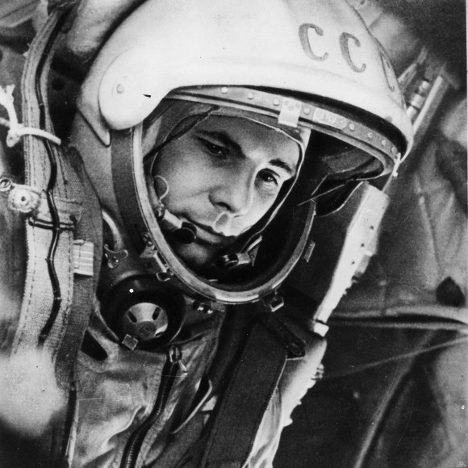
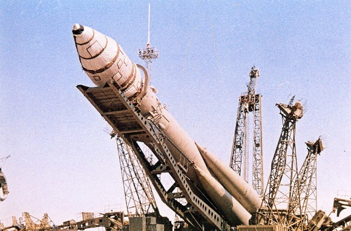
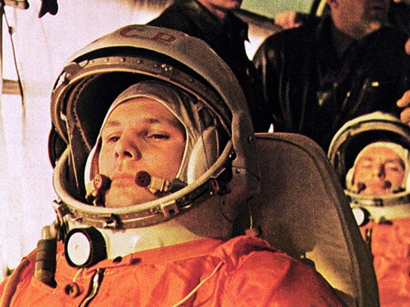
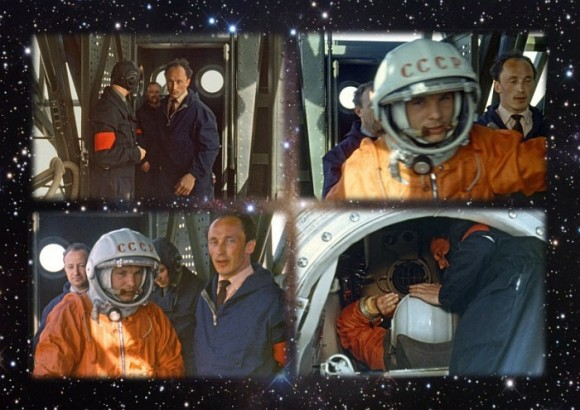
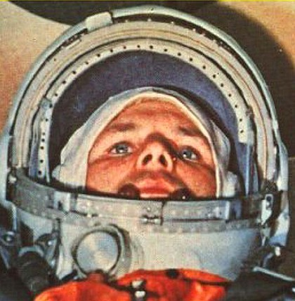
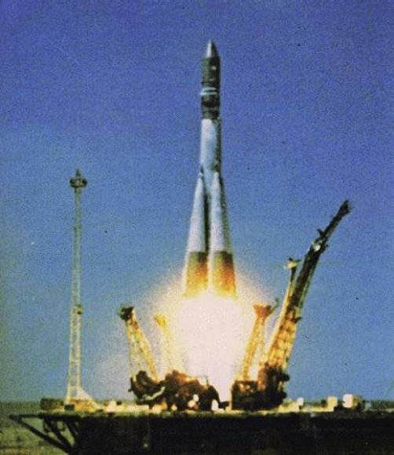
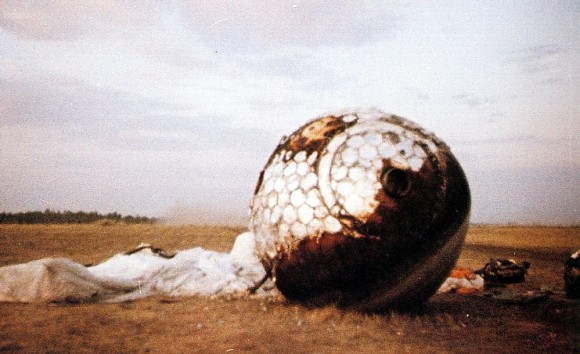

50 лет прошло с тех пор как с космодрома «Байконур» в космос отправился космический корабль «Восток-1», который унёс первого человека на орбиту земли. Если позанудствовать, то нельзя точно сказать были ли этот человек действительно первым, но в том что Юрий Гагарин первым вернулся, сомневаться уже сложно.
Мне, как человеку далёкому от науки, отбросив романтический флёр сложно оценить насколько новая эпоха для человечества настала после возвращения Гагарина из космоса. Ясно одно — планов по освоению космоса у человечества моментально появилось громадное количество. Правда большинству из них не было суждено пока сбыться.
Деревья в 61 году еще были большими, «у руля» была партия с другим названием. В роддомах стало популярным имя Юрий, а в школах и детских садах стало «модным» (хотя раньше не было такого слова) мечтать стать космонавтом.
Когда я учился в школе у нас проходила куча викторин на тему космонавтики. Лично я мог назвать по памяти человек 30 космонавтов. Трагедия с «Челленджером» воспринималась как личная трагедия. Сейчас деревья уже не такие большие…







